EZ-54330
SEAT 600
1957–1973 · Barcelona. El coche que motorizó España. Es el más numeroso del club, con 31 unidades.
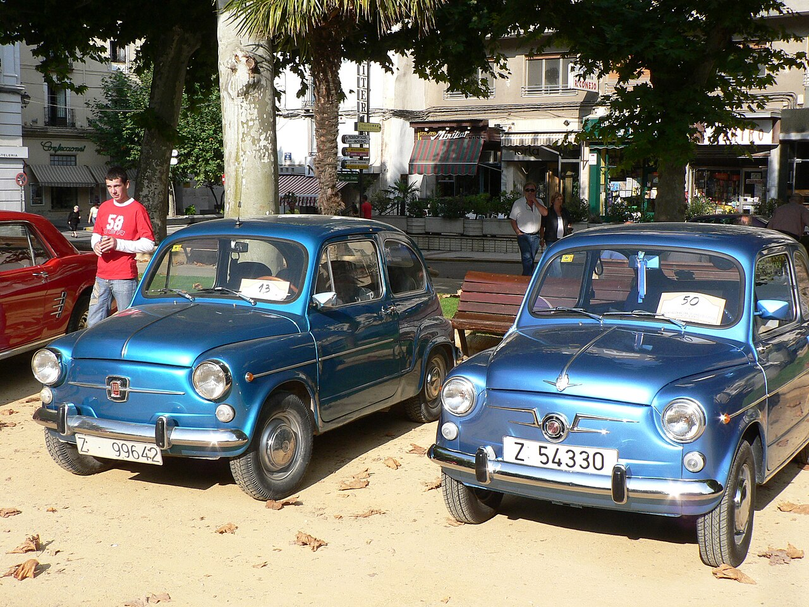
Reunimos a propietarios y aficionados de coches clásicos, sobre todo de los fabricados en España: SEAT, Pegaso, FASA-Renault, Citroën Hispania, Barreiros… Salimos a la carretera casi todos los meses.
Empezamos doce amigos con sus 600 y sus 124 un domingo de primavera en la Plaza del Pilar. Treinta años después seguimos con la misma idea: disfrutar de estos coches conduciéndolos.
En el club hay sitio para cualquier vehículo con más de 25 años, esté restaurado, en proceso o recién sacado de un pajar. No hace falta tener coche para apuntarse: muchos socios vienen por la afición y acaban de copilotos.
Ayudamos con la tramitación de la matrícula histórica, recomendamos talleres de confianza, compartimos recambios y organizamos rutas pensadas para coches que prefieren las carreteras secundarias a la autovía.
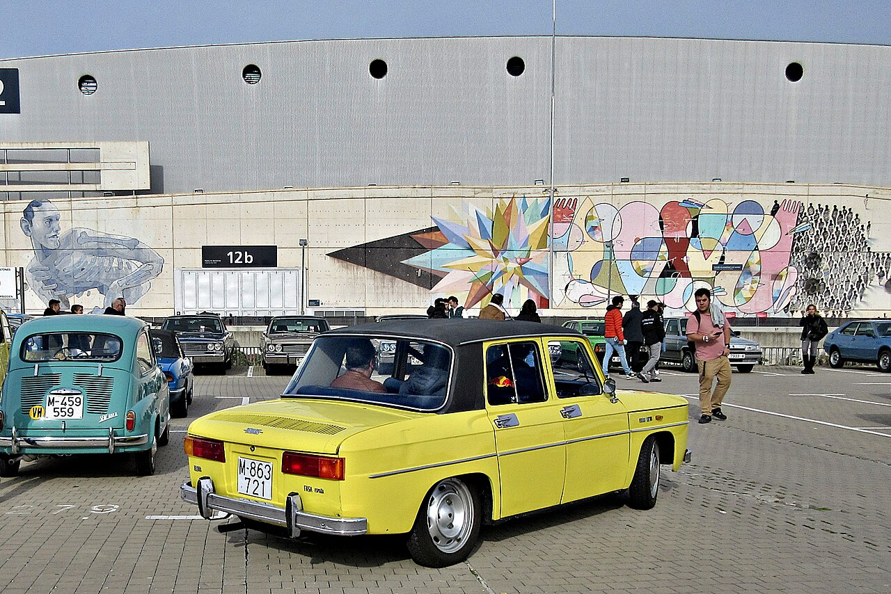
Recorridos de 120 a 250 km por carreteras con encanto, con paradas para comer y fotografiar los coches.
Exposiciones abiertas al público en plazas y fiestas de los pueblos que nos invitan.
Ayuda con la ITV, la catalogación como vehículo histórico y la búsqueda de piezas difíciles.
Cena anual, charlas de restauración y visitas a museos y colecciones privadas.
Una muestra de los coches que suelen venir a nuestras salidas. Casi todos salieron de fábricas españolas.
1957–1973 · Barcelona. El coche que motorizó España. Es el más numeroso del club, con 31 unidades.
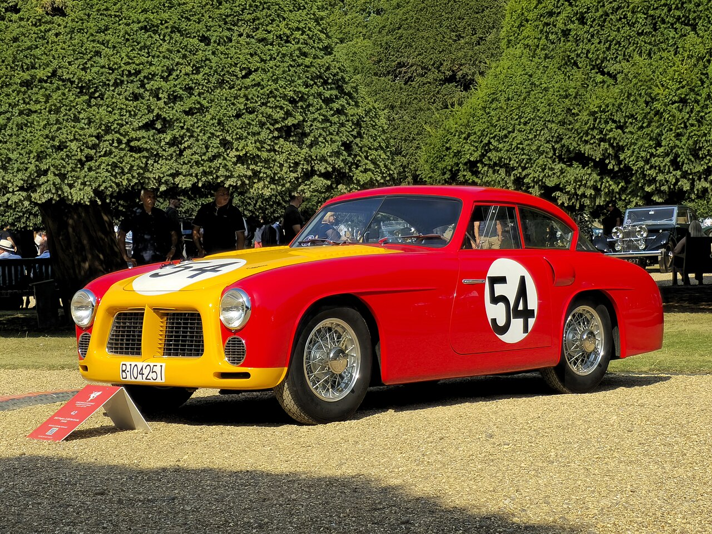
1951–1958 · Barcelona. El deportivo de ENASA. Solo se fabricaron 84 y lo vimos en nuestra visita al museo.
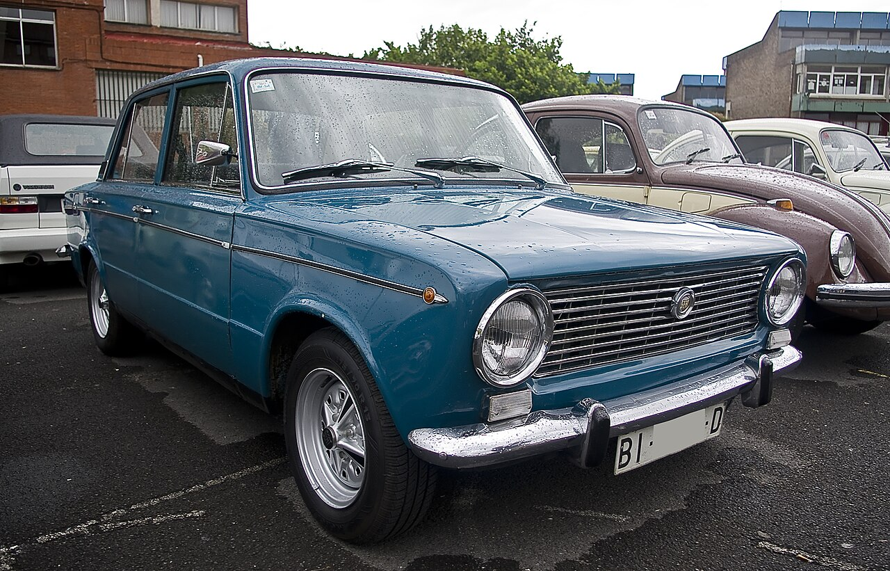
1968–1980 · Barcelona. Fiable y espacioso, perfecto para las rutas largas del club.
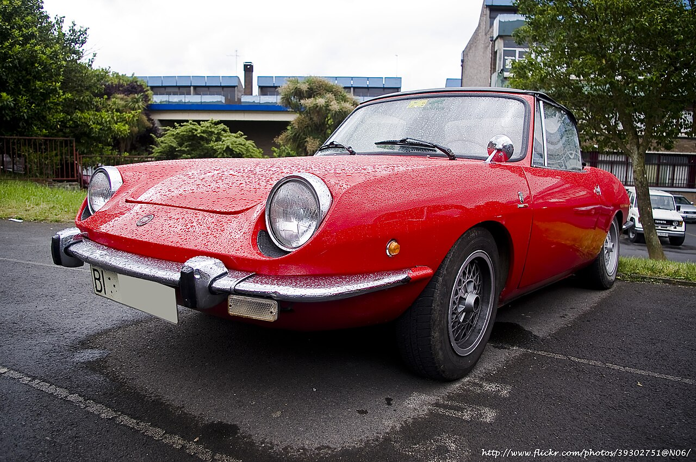
1969–1974. Pequeño descapotable de carrocería Bertone. Pide carreteras de curvas y buen tiempo.
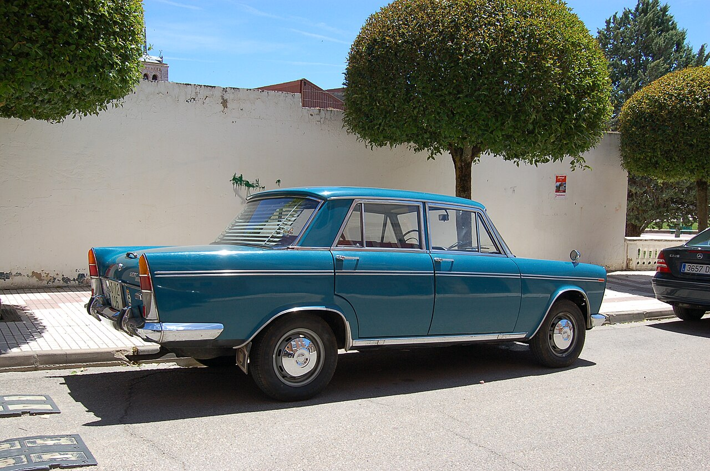
1963–1972. La berlina de los taxis y de los ministerios. Motor de cuatro cilindros y mucho cromo.
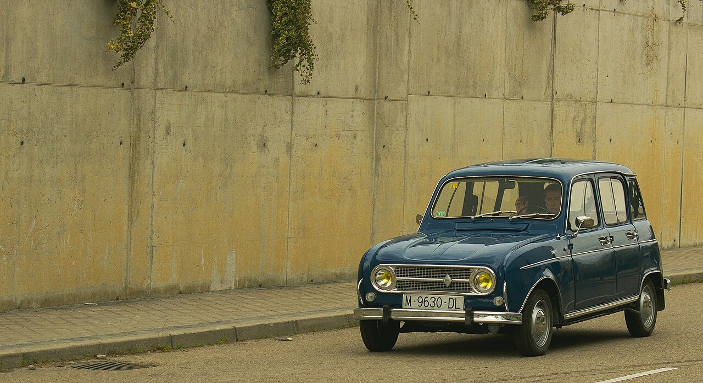
1964–1992 · Valladolid. El “cuatro latas”, capaz de ir por cualquier camino de tierra.
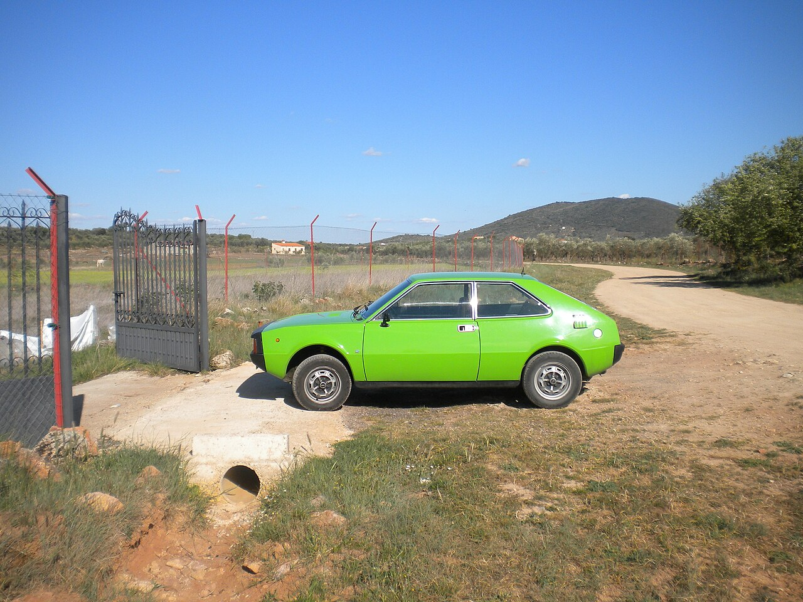
1969–1975. La versión con más brío del 124, con doble faro. Muy buscada por los socios jóvenes.
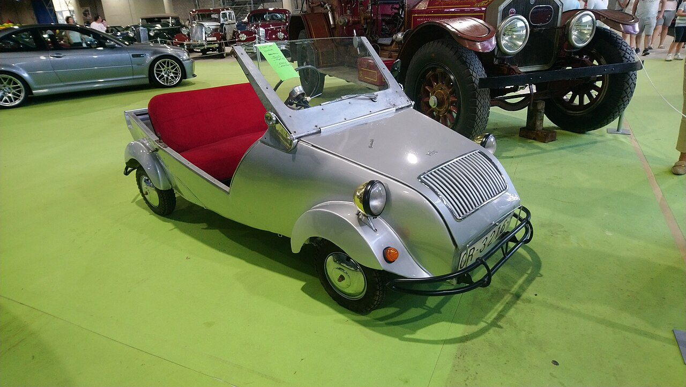
1953–1960 · Barcelona. El microcoche de la posguerra, con motor de 197 cc. Siempre atrae a una multitud.
Ser socio te da acceso a todas las salidas, al seguro de responsabilidad civil para eventos, a descuentos en talleres colaboradores y a la revista trimestral El Cárter.
Calendario de salidas del club. Los eventos abiertos al público lo indican; para las rutas, avisa a la vocalía de rutas con una semana de antelación para reservar la comida.
Salida desde Zaragoza hacia Tarazona y subida al Santuario del Moncayo entre hayedos. Comida en Vera de Moncayo.
Exposición en el Parque Grande José Antonio Labordeta. Premios al mejor restaurado y al coche más viajero. Abierta al público.
Excursión en autobús a la feria de vehículos clásicos. Salida el viernes por la tarde y vuelta el domingo.
Repaso fotográfico de la temporada, sorteo de recambios y premio al socio con más kilómetros en rutas del club.
Bendición de vehículos en Cariñena y recorrido corto por las bodegas del Campo de Cariñena.
Un socio mecánico explica cómo ajustar los carburadores de los SEAT de los 60 y 70. Con taller práctico.
Primera ruta de primavera por Calatayud y Nuévalos. Visita al parque y comida en el monasterio.
No hay eventos de este tipo en el calendario actual.
Nuestras rutas favoritas, con sus tramos y paradas. Las repetimos cada año y están preparadas para coches de más de 40 años: sin autovías, con paradas para enfriar motores y gasolineras localizadas.
Carreteras de curvas suaves hasta el techo del Sistema Ibérico. La subida al santuario es estrecha y con pendiente: conviene revisar frenos antes.
| Km | Punto | Nota |
|---|---|---|
| 0 | Casetas | Reunión y café |
| 62 | Borja | Parada técnica, gasolinera |
| 88 | Tarazona | Foto de grupo en la plaza de toros vieja |
| 112 | Santuario del Moncayo | Subida en orden, sin adelantar |
| 130 | Vera de Moncayo | Comida |
| 184 | Zaragoza | Regreso libre |
Tramos por la antigua N-II y el valle del río Piedra. Ruta larga pero cómoda, ideal para berlinas como el 124 o el 1500.
| Km | Punto | Nota |
|---|---|---|
| 0 | Zaragoza | Salida por la antigua N-II |
| 45 | La Almunia | Café y repostaje |
| 87 | Calatayud | Paseo por el casco antiguo |
| 119 | Nuévalos | Visita al parque y comida |
| 238 | Zaragoza | Regreso por Daroca |
Salida temprana para evitar el calor. Recorrido por la Sierra de Albarracín con una pista corta de tierra que los 4L y los 2CV disfrutan mucho.
| Km | Punto | Nota |
|---|---|---|
| 0 | Teruel | Reunión en la Escalinata |
| 38 | Albarracín | Visita guiada y noche en hotel |
| 74 | Bronchales | Pista de tierra de 6 km (opcional) |
| 121 | Orihuela del Tremedal | Comida |
| 212 | Teruel | Fin de ruta |
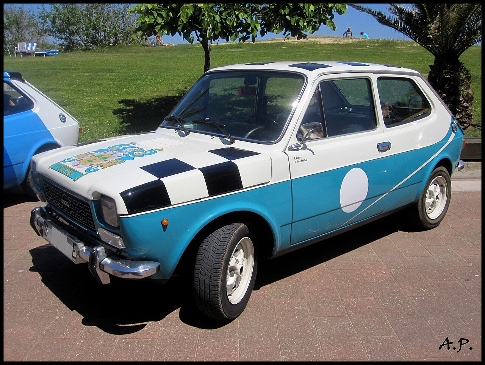
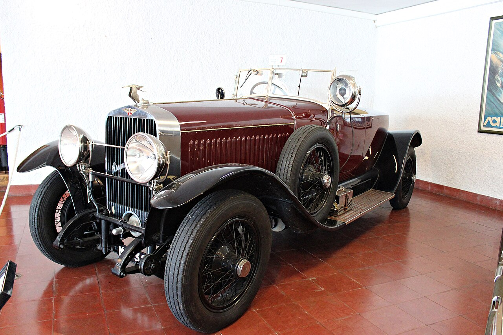